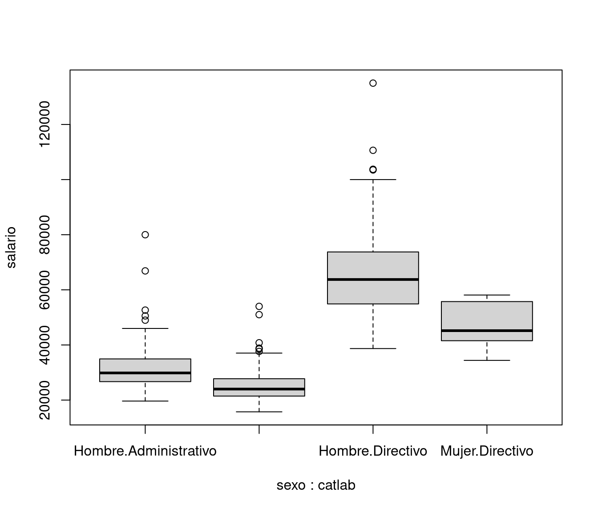

4.1 Introducción al ecosistema tidyverse
El paquete tidyverse está diseñado para facilitar la instalación y carga de los paquetes principales de la colección tidyverse con un solo comando.
Al instalar este paquete se instalan paquetes que forman el denominado núcleo de tidyverse (se cargan con library(tidyverse)):
ggplot2: visualización de datos.dplyr: manipulación de datos.tidyr: reorganización (limpieza) de datos.readr: importación de datos.tibble: tablas de datos (extensión dedata.frame).purrr: programación funcional.stringr: manipulación de cadenas de texto.forcats: manipulación de factores.lubridate: manipulación de fechas y horas.
y un conjunto de paquetes recomendados:
- feather: almacenamiento efeciente de data frames.
- haven: lectura y escritura de datos de SPSS, Stata y SAS en R
- modelr: crear pipelines3 elegantes al modelar datos en R (obsoleto). broom…): resumenes estadísticos en formato Tidy
Otros paquetes de interés son:
readxl: lectura de archivos Excel.readxl: exportación a Excel.hms: manipulación de medidas de tiempo.httr: interactuar con web APIs.jsonlite: Lectura y escritura de archivos JSON (JavaScript Object Notation).rvest: extraación de datos (estructurados) de páginas web web scraping.xml2: lectura y escritura de archivos XML.vroom: lectura eficiente de archivos delimitados
También hay paquetes “asociados”:
rlang: herramientas para programación funcional.tidyselectSintaxis seleccionar variables (columnas).tune: hiperparámetros en modelos estadísticostidymodelsmeta-paquete para todo el proceso de modelado.
Muchos otros paquetes están adaptando este estilo, por ejemplo, el meta paquete tidyverts) para el análisis de series temporales (time series, TS), que incluye, por ejemplo:
tsibble(infra)estructuras de datos.fablepredicción (forecasting).feastsextracción de características (predictores).
El paquete fpp3 asociado al libro Forecasting: Principles and Practice también sigue una filosofía tidy.
Otro ejemplo, en este caso, para el tratamiento de datos espaciales, sería el paquete sf, para más detalles ver Sección 2.2 Introducción al paquete sf del libro Estadística Espacial con R
Resumiendo, está muy de moda y puede terminar convirtiéndose en un dialecto del lenguaje R, todo lo que resulte de utilidad es bien venido… Aunque se recomienda evitar estos paquetes en las primeras etapas de formación en R.
El estilo de programación tiene como origen la gramática de ggplot2 para crear gráficos de forma declarativa, basado a su vez en:
Wilkinson, L. (2005). The Grammar of Graphics. Springer.
Este paquete se ha convertido en un sustituto de los gráficos lattice, de utilidad en algunos informes finales, aplicaciones para empresas, o para gráficos muy especializados. Aunque, en condiciones normales, suele ser más rápido generar o programar gráficos estándar de R.
Para iniciarse en este paquete lo recomendado es consultar los capítulos Data Visualización y Graphics for communication de R for Data Science. También puede resultar de interés la chuleta). La referencia que cubre con mayor profundidad este paquete es:
Wickham, H. (2016). ggplot2: Elegant graphics for Data Analysis (3ª edición, en desarrollo junto a Navarro, D. y Pedersen, T.L.). Springer.
Otra alternativa sería:
Chang, W. (2023). The R Graphics Cookbook. O’Reilly.
En ggplot2 se emplea el operador + para añadir componentes de los gráficos (ver , en Tidyverse se emplea un operador de redirección para añadir operaciones.
4.1.1 Operador pipe (redirección)
El operador %>% (paquete magrittr) permite canalizar la salida de una función a la entrada de otra. Se utiliza para mejorar la legibilidad y la claridad del código al encadenar múltiples operaciones en una secuencia fluida
Por ejemplo, segundo(primero(datos)) se traduce en datos %>% primero %>% segundo, lo que facilita la lectura de operaciones al escribir las funciones de izquierda a derecha.
Desde la versión 4.1 de R está disponible un operador interno |>.
Por ejemplo, para el conjunto de datos empleados.RData que contiene datos de empleados de un banco. Supongamos, por ejemplo, que estamos interesados en estudiar si hay discriminación por cuestión de sexo o raza.
load("data/empleados.RData")
# NOTA: Cuidado con la codificación latin1 (no declarada)
# al abrir archivos creados en versiones anteriores de R < 4.2:
# load("data/empleados.latin1.RData")
# Listamos las etiquetas
#knitr::kable(attr(empleados, "variable.labels"),
# col.names = "Etiqueta")
# Eliminamos las etiquetas para que no molesten...
# attr(empleados, "variable.labels") <- NULL
#empleados |>
# subset(catlab == "Directivo", catlab:sexoraza) |>
# summary()Para que una función sea compatible con este tipo de operadores el primer parámetro debería ser siempre los datos.
Sin embargo, el operador %>% permite redirigir el resultado de la operación anterior a un parámetro distinto mediante un ..
Por ejemplo:
# ?"|>"
# empleados |> subset(catlab != "Seguridad") |> droplevels |>
# boxplot(salario ~ sexo*catlab, data = .) # ERROR
library(magrittr)
empleados %>%
subset(catlab != "Seguridad") %>%
droplevels() %>%
boxplot(salario ~ sexo*catlab, data = .)
4.1.2 Lectura y escritura de archivos de texto
En esta seccón la alternativa tidyverse, a la tradicional, vista en las secciones 2.1.3 y 2.1.6 del Capítulo 2.
Para leer archivos de texto en distintos formatos se puede emplear el paquete readr, disponible en la colección de paquetes tidyverse. Para más información, se recomienda consultar el Capítulo 11 del libro R for Data Science (Wickham, Çetinkaya-Rundel, and Grolemund 2023) o la versión en español “R Para Ciencia de Datos”.
## [1] "spec_tbl_df" "tbl_df" "tbl" "data.frame"También se puede importación desde Excel fácilmente:
## [1] "tbl_df" "tbl" "data.frame"## [1] "coches"Otra alternativa, sería emplear el paquete data.table.
La función fread() puede considerarse como alternativa a read_csv()
cuando el proceso de lectura resulta lento, especialmente con datos numéricos pesados. ESta función intenta adivinar automáticamente algunos argumentos sin tener que especificarse como, por ejemplo, el delimitador, las filas omitidas y la cabecera. Sin embargo, si requiere especificar el separador del decimal, como a continuación:
## [1] "data.table" "data.frame"Para más información, se recomienda ver la viñeta Introduction to data.table.
4.1.3 Escritura
Con el ecosistema tidyverse, también con el paquete readr se puede utilizar la función write_csv2():
y como opción más rápida, se podría usar fwrite() del paqute data.table:
Working draft…
En este capítulo se realiza una breve introducción al paquete dplyr.
Para mas información, ver por ejemplo la ‘vignette’ del paquete
Introduction to dplyr,
o el Capítulo 5 Data transformation del libro
R for Data Science4.
References
serie de pasos conectados (tuberías) que procesan datos y los transforman en un formato deseado para su análisis o modelado↩︎
Una alternativa (más rápida) es emplear data.table.↩︎